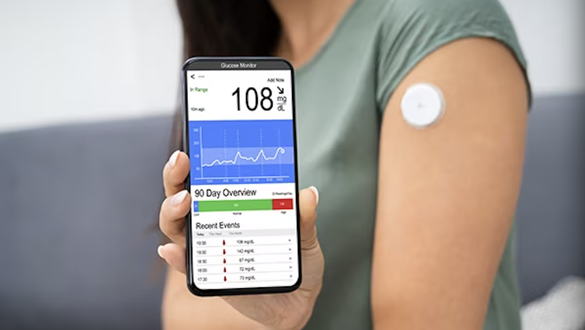

Here's a compilation of my favorite data science coursework and personal projects that I have completed throughout the years from newest to oldest:

TEAMWORK ● PROJECT MANAGEMENT ● MISSING DATA IMPUTATION ● TIME SERIES ANALYSIS
In Progress: Sept 2023 - Present
Collaborating in a four-person team looking to advance our understanding of CGM data analysis, with a focus on the implications of missing data and the potential to derive meaningful insights in the presence of such data challenges. Additionally, we aim to determine an effective way to impute the missing data.
See More
TEAMWORK ● DATA CLEANING ● PYTHON ● BAYESIAN MACHINE LEARNING ● MODELING ● VARIATIONAL INFERENCE
Nov - Dec 2023
Collaborated in a three-person team focusing on modeling and understanding injuries in competitive runners using Bayesian Machine Learning techniques including a Beta-Binomial Model with HMC Sampling and ADVI Approximation.
See More
GITHUB
TEAMWORK ● R ● DATA ANALYSIS ● STATISTICAL MODELING
Jul 2023
Collaborated in a four-person team with a focus on analyzing and predicting trends in the King County, WA housing market based on 21,614 houses sold. Employed statistical modeling techniques, particularly linear and logistic regression, to explore the impact of various house attributes on selling prices and the likelihood of a property being situated in one of the region's "20 Wealthiest Zip Codes."
See More
GITHUB

TEAMWORK ● R ● DATA ANALYSIS ● LINEAR REGRESSION
Jul 2023
Collaborated in a four-person team to conduct an analysis of over 1,000 diamonds from Blue Nile, examining the impact of factors like cut, clarity, color, and carat on diamond prices. Findings validated and disproved various claims made by Blue Nile, supporting the conclusion that the positive relationship between price and carat is a key determinant in diamond pricing.
See More
GITHUB
TEAMWORK ● WEB SCRAPING ● FEATURE ENGINEERING ● WEB CRAWLING ● PYTHON ● IMAGE CLASSIFICATION ● CNN ● HTML ● CSS
Jan 2023
Collaborated in a three-person team to web scrape and crawl hundreds of images of diverse groups of celebrities. Passed these images through a convolutional neural network (CNN) to train and validate and eventually identify celebrities with high accuracy.
See more
GITHUB
TEAMWORK ● DATA CLEANING ● R ● SHINY ● GGPLOT ● DATA VISUALIZATION ● DATA ANALYSIS ● MACHINE LEARNING ● HTML ● CSS
Jan 2023
Collaborated in a three-person team to develop a Shiny app visualizing and analyzing water quality metrics, as well as train Random Forest and Decision Tree Models to predict non-potable water.
See more
Shiny App
GITHUB

DATA COLLECTION ● DATA CLEANING ● MULTIPLE LINEAR REGRESSION ● DATA ANALYSIS ● TABLEAU ● EXCEL
Oct - Dec 2022
Collected college football financial and standing data to create my own regression in order to determine how a program's revenues and expenses can affect its standing and performance.
See more
Tableau Dashboards

TEAMWORK ● R ● GGPLOT ● SHINY ● DATA COLLECTION ● DATA VISUALIZATION
Nov - Dec 2022
Collaborated in a three-person team to analyze fatal collisions in the continental United States and discovered how geography can play a large role through various visualizations.
GITHUB

API CALL ● DATA TRANSFORMATION ● SQL DATABASE
Oct 2022
Created a segment of an ETL pipeline that ingests and processes raw data extracted from a holiday API, transforms it, and inserts it into a SQL database.
GITHUB
PYTHON ● DATA TRANSFORMATION ● MONGODB ● CHATBOT
Oct 2022
Used data on Netflix TV shows and movies to create an ETL pipeline to extract, transform, and load multiple datasets from CSV files into a MongoDB database to then create a chatbot.
GITHUB
TEAMWORK ● PYTHON ● TABLEAU ● DATA COLLECTION ● DATA VISUALIZATION ● DATA ANALYSIS
Jun 2021
Collaborated in a two-person team to analyze how different factors (gender, race, socioeconomic status, etc.) can affect math, reading, and writing test scores. Tableau visualizations were created to present findings.
See More
GITHUB
TEAMWORK ● DATABASES ● MYSQL ● MONGODB ● NEO4J ● PYTHON
Jun 2021
Collaborated in a four-person team to design a custom dataset, populate it into MySQL, MongoDB, and Neo4j, write Python scripts to query each of them, and examine the strengths and weaknesses of each database architecture.
See More
Read More
GITHUB
TABLEAU ● PYTHON ● DATA COLLECTION ● DATA VISUALIZATION ● DATA ANALYSIS
Jun 2021
Presented a guide for students to find the right college with attention towards diversity, tuition cost, and post-grad salary. Tableau visualizations were created to present findings.
See More
GITHUB

PYTHON ● DATA COLLECTION ● DATA CLEANING ● DATA VISUALIZATION ● DATA ANALYSIS ● PLOTLY
Sept 2020
Analyzed global economic freedom based on gap between the most and least economically free countries and regions and created a scatterplot and map visualization to show findings.
See More
GITHUB
CYBERSECURITY ● DATA SCIENCE
Aug 2020
Researched and wrote article about how data science helps cybersecurity in various ways to prevent cyber attacks.
Read More

PYTHON ● DATA COLLECTION ● DATA VISUALIZATION ● DATA ANALYSIS
Apr 2020
Analyzed and wrote article about how cost effective different college majors can be in regards to future salary and compared those returns to their popularity.
Read More
GITHUB

PYTHON ● DATA COLLECTION ● DATA CLEANING ● DATA VISUALIZATION
Feb 2020
My first ever data science project: Analyzed the power ratings and postseason results of the 2019 NCAA College Basketball season to determine whether overall power rating affects postseason success.
GITHUB